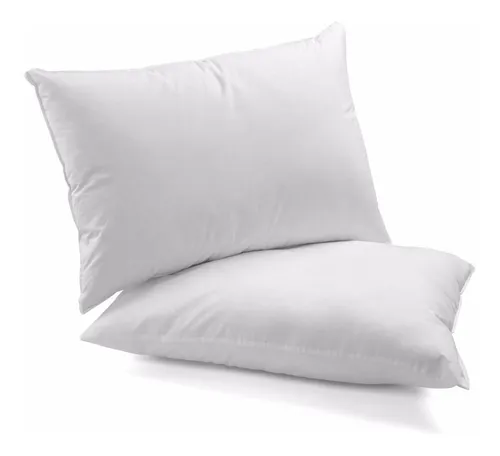

INÍCIO
VÍDEOS
SOBRE
SAIBA MUITO MAIS
CURIOSIDADES

Eu sou o
Travesseiro
Eu sirvo para conforto
Oi!
Eu me sinto triste porque todo mundo me cabeceia,mas eu sou muito importante para o cotidiano
VÍDEOS
SOBRE
SAIBA MUITO MAIS
Saiba Muito Mais
Saiba Muito Mais
CURIOSIDADES